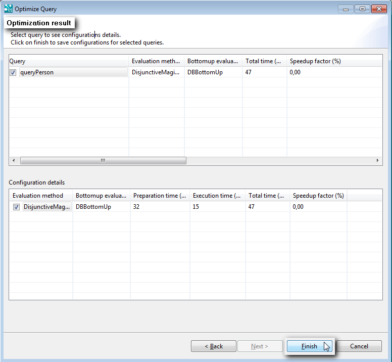
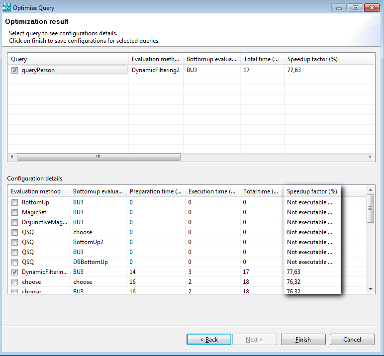
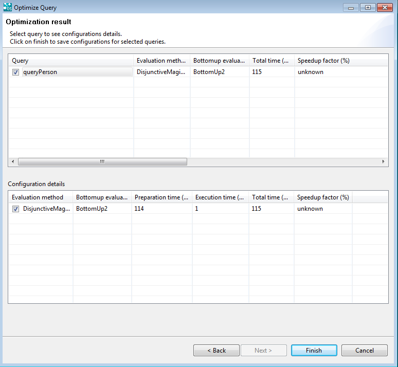
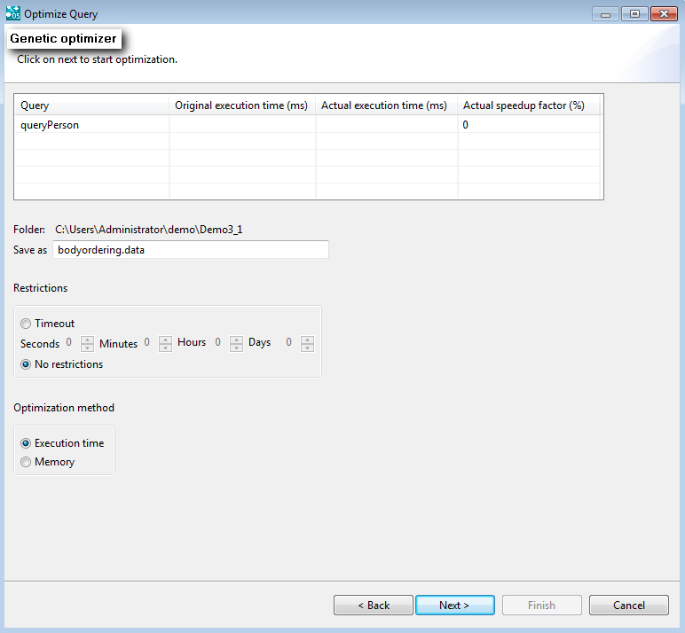
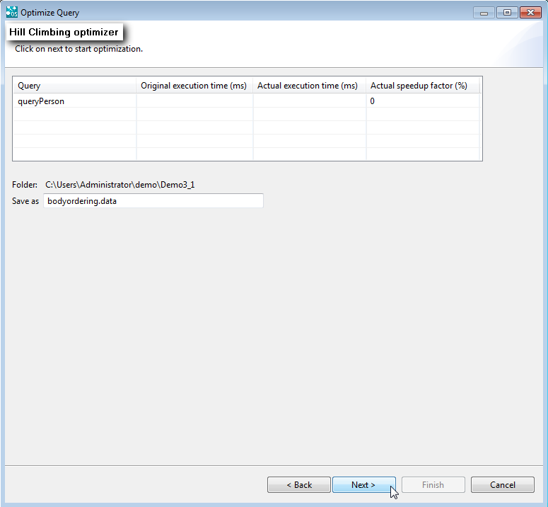

|

|
|
Optimization Methods Overview |
|
|
|
|
Optimization Methods Overview |
OntoStudio supports multiple optimizers. Most of them just rewrite a set of rules into an optimized set of rules. If you run an optimization, choose an optimization method that suits your scenario to get the best results. For example, if you are trying to optimize a query that does not access a database then the database optimizers are not a good choice. This chapter describes the different optimization methods which can be chosen from the Optimization dialog box and their results.
Quick Configuration Optimization
This optimization works without the generation of time statistics. All of the configurations are tested but only the fastest configuration is displayed:

| • | Query: The name of the optimized query. |
| • | Evaluation method: The name of the evaluation method. |
| • | Bottomup evaluator: The name of the evaluator. |
| • | Total time: The time the query needs to execute with optimization. |
| • | Speedup factor: The speedup factor of the optimized query. |
Configuration Optimization with Time Statistics
Configuration optimization with time generation of time statistics. All configurations are tested. The execution time and the speed up factor for all configurations are displayed.

External Database Access Optimization
Quick configuration optimization for external database access. Only configurations with the minimum number of dbaccessuser will be tested. For more information see the OntoBroker Enterprise Manual.

Genetic Optimizer
Genetic algorithms (GAs) are evolutionary algorithms that use the principle of natural selection to develop a set of solutions towards the optimum solution. GAs are not only quite powerful, but they are also very easy to use as most of the work can be encapsulated into a single component. It would be necessary to define a fitness function that determines how "good" a particular solution is in comparison with others. For more information, see the OntoBroker Enterprise Manual.

| • | Folder and Save as: Here you can select the file name and the directory where an optimized query will be saved. |
| • | Restrictions: If the Timeout option is activated you can insert a timeout. When this time expires the optimization results will be shown, otherwise the timeout is deactivated |
| • | Optimization method: Here you can select the optimization method, execution time or memory |
Additional information about the Genetic Optimizer:
Consider the following query: ?- p(?X)@_defaultModule AND _unify(?X,"a").
These facts are within the edb: p(a).\n p(b).\n [...] p(z).\n
If you calculate this query from left to right, you will first have to get all 26 facts, throwing away 25 of them after the joining AND.
Now consider this query: ?- _unify(?X,"a") AND p(?X)@_defaultModule.
If evaluated from left to right, you just have to get the fact p(a), as the value of the variable X is bound to a. Swapping the rules might speed up the evaluations.
There might be some cases where these heuristics fail. The genetic optimizer is a tool which guesses the permutations of rules and evaluates them afterwards. The shorter the time compared with the other queries, the bigger the chances that parts of this rule will be taken as blueprints for the next generation of rules. As the search space is very big, this is very time-consuming.
This scenario is for structures of queries that just exchange their constants and where the ontology stays stable. If you optimize it for a query for my ancestors, it should also match a query asking for your ancestors. In a way, it is a kind of an alternative for materializing parts of the ontology.
Where it should not be used:
Queries that have very short running times or ontologies that are often changed (as after each change it could be necessary to run optimization again), ontologies with no defined query structure, where most queries are used just once.
Hill Climbing Optimizer
Hill climbing can be used to solve problems that have many solutions, some of which are better than others. It starts with a random (potentially poor) solution, and iteratively makes small changes to the solution, each time improving it a little. When the algorithm cannot see any improvement anymore, it terminates. Ideally, at that point the current solution is close to optimal, but it is not guaranteed that hill climbing will ever come close to the optimal solution. For more information see the OntoBroker Enterprise Manual.

For more information see the OntoBroker Enterprise Manual.